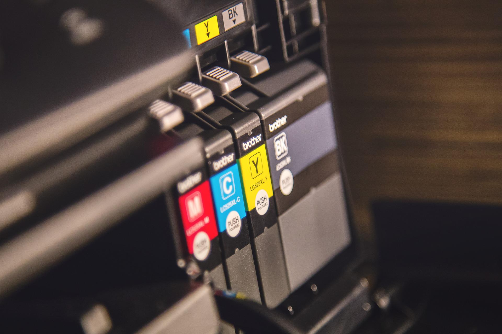

อย่างแรกจะเป็นเรื่องของต้นทุนและกำลังในการผลิต
ที่ส่งผลให้งานสิ่งพิมพ์ที่ทำออกมาขายให้ลูกค้ามีความแตกต่างกัน
โรงพิมพ์ดิจิตอล จะใช้เครื่องปริ๊นดิจิตอล โดยจะคิดเป็นราคาต่อชิ้น ซึ่งจะเหมาะงานพิมพ์ที่จำนวนไม่มีมาก (Print on demand) ราคาถูกและต้องการงานอย่างเร่งด่วน
แต่ของโรงพิมพ์ออฟเซ็ท จะใช้เครื่องพิมพ์ขนาดใหญ่ ต้องทำเพลทและต้องจ้างช่างพิมพ์ที่มีความชำนาญ ทำให้งานของโรงพิมพ์แบบออฟเซ็ทมีคุณภาพที่ดีกว่า แต่ต้นทุนในการทำก็จะสูงขึ้นตามไปด้วย ซึ่งจะเหมาะกับงานพิมพ์จำนวนมากกว่า 1,000 แผ่นขึ้นไป จะคุ้มค่ามากกว่า
ความแตกต่างอีกหนึ่งของโรงพิมพ์ดิจิตอล คือ ระบบสี
การพิมพ์ 1 สี ส่วนใหญ่จะเป็นงานพิมพ์เฉพาะขาว-ดำ
แต่งานพิมพ์ระบบดิจิตอล คือการพิมพ์ 4 สี หรือ Full color ทั้งหมด
ดังนั้นไม่ว่าจะพิมพ์สีแดงสีเดียว หรือพิมพ์แค่สีแดง เขียว 2 สี ถ้าคุณสั่งงานในระบบพิมพ์ดิจิตอล ก็คือการพิมพ์ในระบบ 4 สีนั่นเอง
ขณะที่โรงพิมพ์ออฟเซ็ท สามารถใช้ระบบพิมพ์ 1 สี เป็นทางเลือกลดต้นทุนสำหรับคุณได้ เช่นในการสั่งทำหัวจดหมายพิมพ์สีน้ำเงิน สีเดียว
แต่อย่างที่กล่าวไปตั้งแต่ข้างต้นว่า จำนวนที่คุณจะสั่งผลิต จะต้องมากกว่า 1,000 แผ่นขึ้นไป จึงจะคุ้มกับการสั่งพิมพ์ในระบบออฟเซ็ท
ดังนั้น นี่คือความแตกต่างที่จะเป็นทางเลือกว่าคุณต้องการงานด่วน จำนวนตามต้องการ หรือจะรอสั่งจำนวนมากเพื่อให้ได้ความคุ้มค่าทางต้นทุน
บทความเกี่ยวกับสิ่งพิมพ์อื่นๆ
- ขนาดของกระดาษตามระบบ ISO
- ระบบสี CMYK กับ RGB ต่างกันอย่างไร
- ส่ง FILES ARTWORK ให้โรงพิมพ์อย่างไร ให้ไม่มีปัญหา
- ชนิดของกระดาษ ที่ใช้ในงานพิมพ์
- ใช้โปรแกรมไหน ทำ Artwork ส่งโรงพิมพ์ดี
- การเคลือบสิ่งพิมพ์ (Coating Method) แต่ละชนิดมีอะไรบ้าง
- นามสกุลไฟล์ ที่ใช้ในงานพิมพ์แต่ละชนิดแตกต่างกันยังไง
- กระดาษที่นิยมนำมาทำถุงมีกี่ชนิด
- กระดาษที่นิยมนำมาผลิตกล่องมีกี่ชนิด
- สื่อสิ่งพิมพ์โฆษณากระดาษ โบร์ชัวร์ ใบปลิว มีกี่ชนิด อะไรบ้าง
- การเข้าเล่มหนังสือมีทั้งหมดกี่ชนิด
- เทคนิคการทำไฟล์ Artwork ส่งโรงพิมพ์ Offset ให้ราคาถูกลง
- ท่ามกลางเทรนด์ของสื่อดิจิตอล ทำไมสื่อสิ่งพิมพ์ถึงยังมีความจำเป็นอยู่
- วิธีการออกแบบสื่อสิ่งพิมพ์ให้มีประสิทธิภาพ
- วิธีการสร้างแบรนด์ให้แข็งแกร่งโดยใช้สื่อสิ่งพิมพ์
- ปัญหาที่พบบ่อยในงานสิ่งพิมพ์
- ขนาดอัตราส่วนของกระดาษ A B C ANSI
- ขั้นตอนหลักๆ ในการทำสิ่งพิมพ์ประเภทต่างๆ
- เทคนิคการพิมพ์แบบพิเศษ
- ความรู้เกี่ยวกับทฤษฎีการผสมสี CMYK
- ชนิดของกระดาษใช้ทําบิลมีอะไรบ้าง
- สาเหตุของปัญหา รอยขีดข่วน บนงานพิมพ์เกิดจากอะไร
- คำแนะนำในการออกแบบ ฟอนต์ สี และการจัดรูปแบบของสื่อสิ่งพิมพ์
- การพิมพ์ออฟเซ็ท (Offset Printing) คืออะไร?
- การพิมพ์ดิจิทัล (Digital Printing) คืออะไร?
- นวัตกรรมใหม่ของธุรกิจสิ่งพิมพ์
- การพิมพ์ที่ยั่งยืน (Sustainable Printing) คืออะไร
- การใช้ AR ในอุตสาหกรรมการพิมพ์
- พลังของบรรจุภัณฑ์ทางการตลาด
- เทคนิคการตัดไดคัทและปั๊มนูน
- อนาคตของการเทคโนโลยีสิ่งพิมพ์
- การพิมพ์เพื่อความปลอดภัย (Security Printing) คืออะไร
- การใช้สื่อสิ่งพิมพ์เพื่อสร้างเอกลักษณ์ของแบรนด์
- การใช้เทคโนโลยี AR และ Interactive ในสื่อสิ่งพิมพ์
- การใช้ AI ในอุตสาหกรรมการพิมพ์
- มุมมองทางประวัติศาสตร์ในอุตสาหกรรมการพิมพ์
- วิธีแก้ปัญหาสระเด้ง/ลอย ให้ถูกต้อง
- ประโยชน์และวิธีการใช้ Pantone ที่ถูกต้อง
- ทำไมราคาหนังสือแพงขึ้น?
- แนวโน้มการออกแบบสิ่งพิมพ์ในปี 2025
- การใช้ AI มาช่วยจัด Layout Artwork ของงานสิ่งพิมพ์
- ตัวอย่างและรายละเอียดปฎิทินแขวน
- วิธีเตรียมไฟล์งานพิมพ์ให้สมบูรณ์แบบ
- แจกฟรี! 🎁 ไอเดีย Packaging น่ารัก ที่ทำให้ลูกค้ารักแบรนด์คุณ
- วิธีเลือกกระดาษให้เหมาะกับงานพิมพ์ของคุณ
- Cost 101: ทำไมพิมพ์เยอะยิ่งคุ้ม (เศรษฐศาสตร์งานพิมพ์)
- ในยุคที่ Online ครองเมือง ทำไม โบรชัวร์ & แคตตาล็อก ถึงยังเป็นอาวุธลับปิดการขายที่ได้?
- แนวโน้มการออกแบบสิ่งพิมพ์ในปี 2026